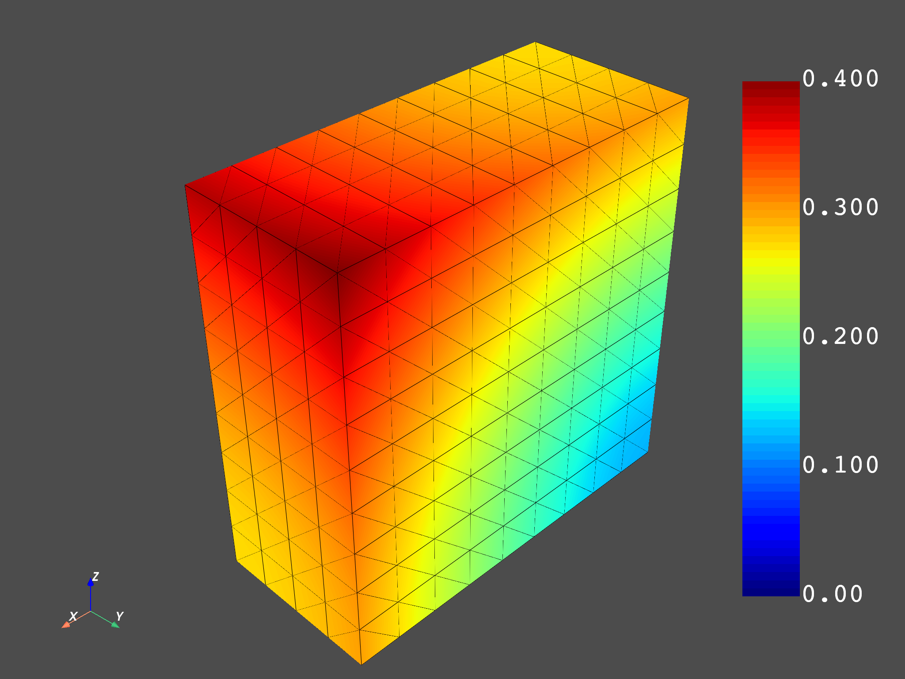

Note
Click here to download the full example code
Create your own entities using DPF operators#
You can create your field, fields container, or meshed region to use DPF operators with your own data. The ability to use scripting to create any DPF entity means that you are not dependent on result files and can connect the DPF environment with any Python tool.
# Import necessary modules
import numpy as np
from ansys.dpf import core as dpf
from ansys.dpf.core import operators as ops
Create a parallel piped mesh made of linear hexa:
length = 0.1
width = 0.05
depth = 0.1
num_nodes_in_length = 10
num_nodes_in_width = 5
num_nodes_in_depth = 10
mesh = dpf.MeshedRegion()
def search_sequence_numpy(arr, seq):
"""Find a sequence in an array and return its index."""
indexes = np.where(np.isclose(arr, seq[0]))
for index in np.nditer(indexes[0]):
if index % 3 == 0:
if np.allclose(arr[index + 1], seq[1]) and np.allclose(arr[index + 2], seq[2]):
return index
return -1
Add nodes:
n_id = 1
for i, x in enumerate(
[float(i) * length / float(num_nodes_in_length) for i in range(0, num_nodes_in_length)]
):
for j, y in enumerate(
[float(i) * width / float(num_nodes_in_width) for i in range(0, num_nodes_in_width)]
):
for k, z in enumerate(
[float(i) * depth / float(num_nodes_in_depth) for i in range(0, num_nodes_in_depth)]
):
mesh.nodes.add_node(n_id, [x, y, z])
n_id += 1
Get the nodes’ coordinates field:
coordinates = mesh.nodes.coordinates_field
Set the mesh unit:
mesh.unit = "mm"
coordinates_data = coordinates.data
flat_coordinates_data = coordinates_data.reshape(coordinates_data.size)
coordinates_scoping = coordinates.scoping
Add solid elements (linear hexa with eight nodes):
e_id = 1
for i, x in enumerate(
[float(i) * length / float(num_nodes_in_length) for i in range(num_nodes_in_length - 1)]
):
for j, y in enumerate(
[float(i) * width / float(num_nodes_in_width) for i in range(num_nodes_in_width - 1)]
):
for k, z in enumerate(
[float(i) * depth / float(num_nodes_in_depth) for i in range(num_nodes_in_depth - 1)]
):
coord1 = np.array([x, y, z])
connectivity = []
for xx in [x, x + length / float(num_nodes_in_length)]:
for yy in [y, y + width / float(num_nodes_in_width)]:
for zz in [z, z + depth / float(num_nodes_in_depth)]:
data_index = search_sequence_numpy(flat_coordinates_data, [xx, yy, zz])
scoping_index = int(data_index / 3) # 3components
connectivity.append(scoping_index)
# rearrange connectivity
tmp = connectivity[2]
connectivity[2] = connectivity[3]
connectivity[3] = tmp
tmp = connectivity[6]
connectivity[6] = connectivity[7]
connectivity[7] = tmp
mesh.elements.add_solid_element(e_id, connectivity)
e_id += 1
mesh.plot()
Create displacement fields over time with three time sets. For the first time set, the displacement on each node is the value of its x, y, and z coordinates. For the second time set, the displacement on each node is two times the value of its x, y, and z coordinates. For the third time set, the displacement on each node is three times the value of its x, y, and z coordinates.
num_nodes = mesh.nodes.n_nodes
time1_array = coordinates_data
time2_array = 2.0 * coordinates_data
time3_array = 3.0 * coordinates_data
time1_field = dpf.fields_factory.create_3d_vector_field(num_nodes)
time2_field = dpf.fields_factory.create_3d_vector_field(num_nodes)
time3_field = dpf.fields_factory.create_3d_vector_field(num_nodes)
time1_field.scoping = coordinates.scoping
time2_field.scoping = coordinates.scoping
time3_field.scoping = coordinates.scoping
time1_field.data = time1_array
time2_field.data = time2_array
time3_field.data = time3_array
time1_field.unit = mesh.unit
time2_field.unit = mesh.unit
time3_field.unit = mesh.unit
Create results over times in a fields container with its time frequency support:
fc = dpf.fields_container_factory.over_time_freq_fields_container(
{0.1: time1_field, 0.2: time2_field, 0.3: time3_field}, "s"
)
Check that the time frequency support has been built:
print(fc.time_freq_support)
DPF Time/Freq Support:
Number of sets: 3
Cumulative Time (s) LoadStep Substep
1 0.100000 1 1
2 0.200000 1 2
3 0.300000 1 3
Plot the norm over time of the fields container:
norm = ops.math.norm_fc(fc)
fc_norm = norm.outputs.fields_container()
mesh.plot(fc_norm.get_field_by_time_complex_ids(1))
mesh.plot(fc_norm.get_field_by_time_complex_ids(2))
mesh.plot(fc_norm.get_field_by_time_complex_ids(3))
- 
Total running time of the script: ( 0 minutes 7.082 seconds)